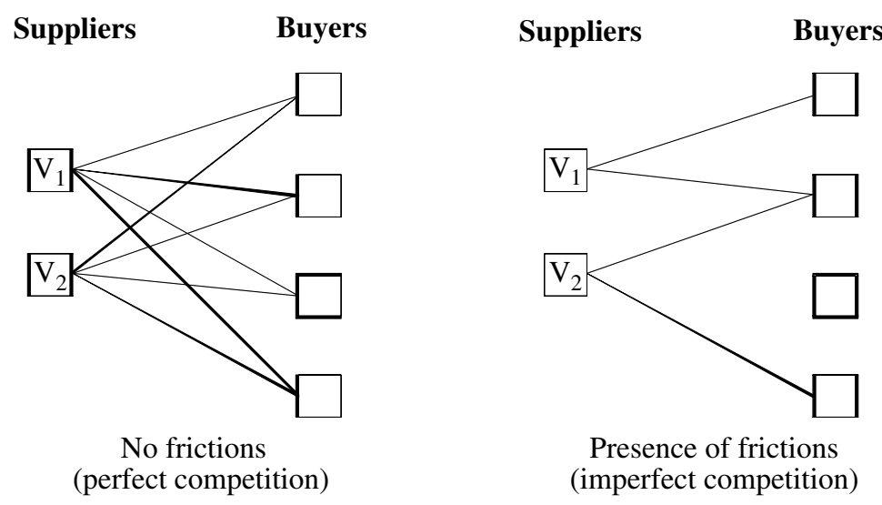
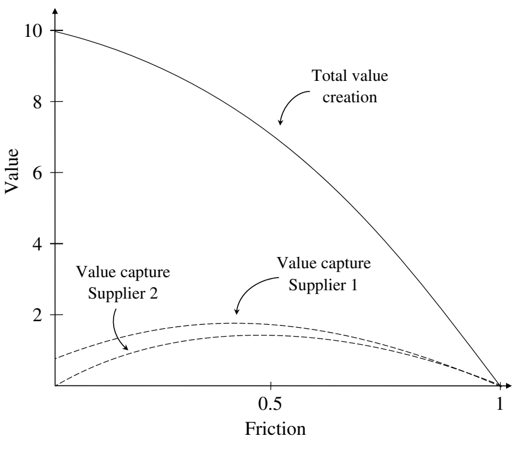
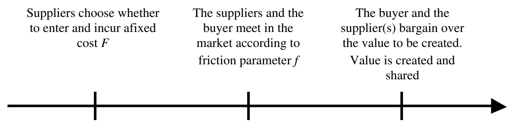
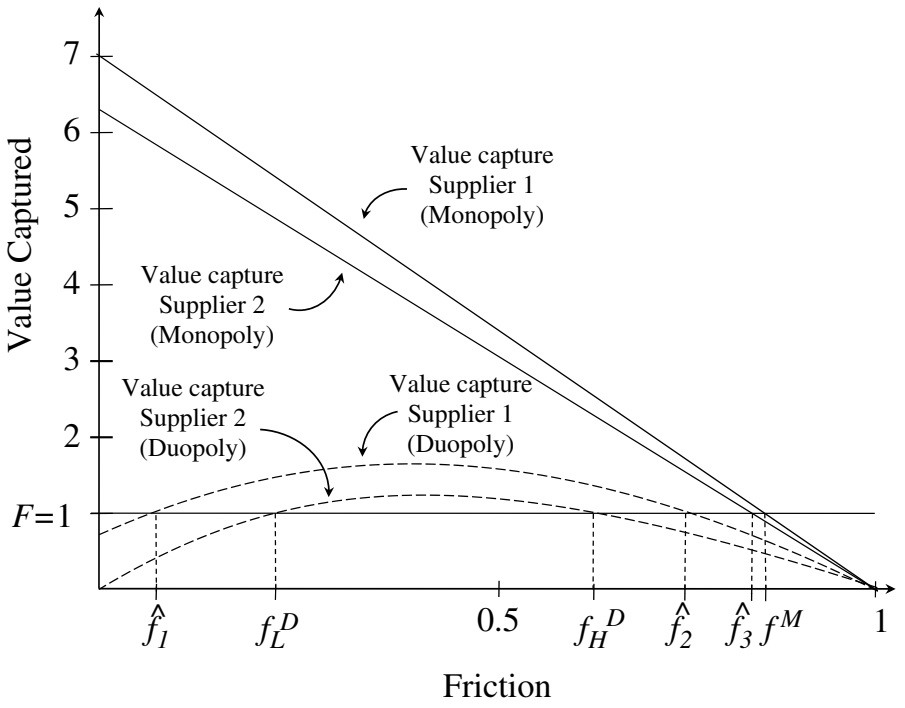
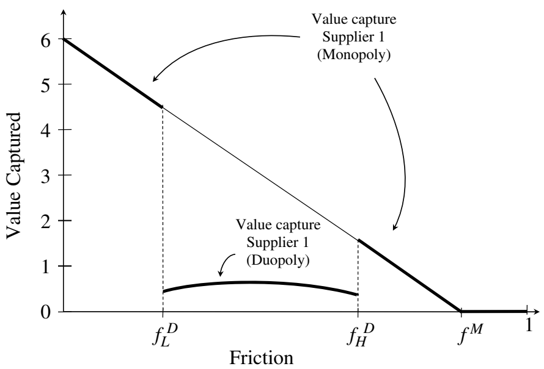
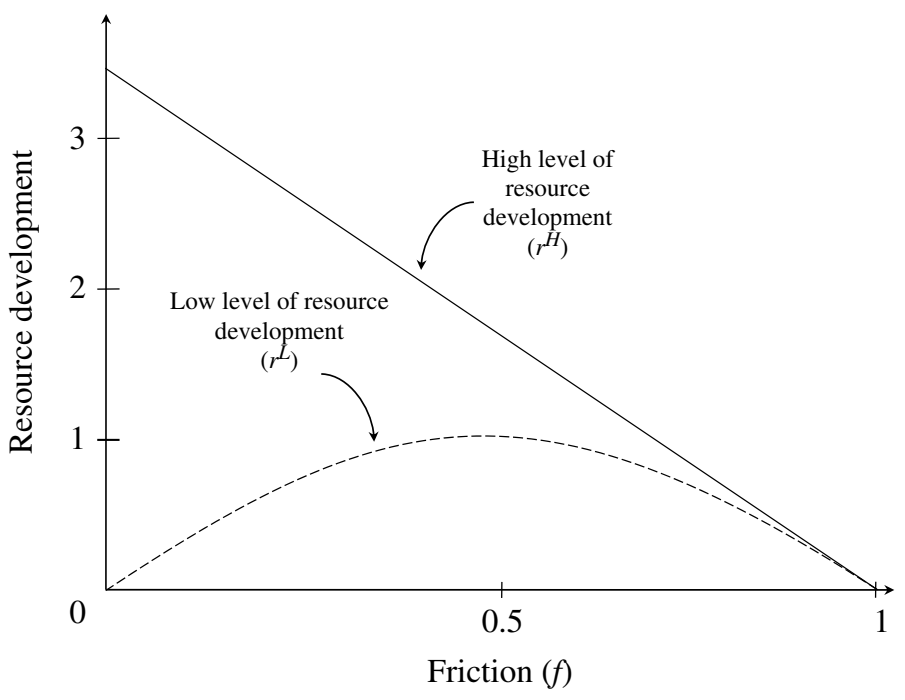
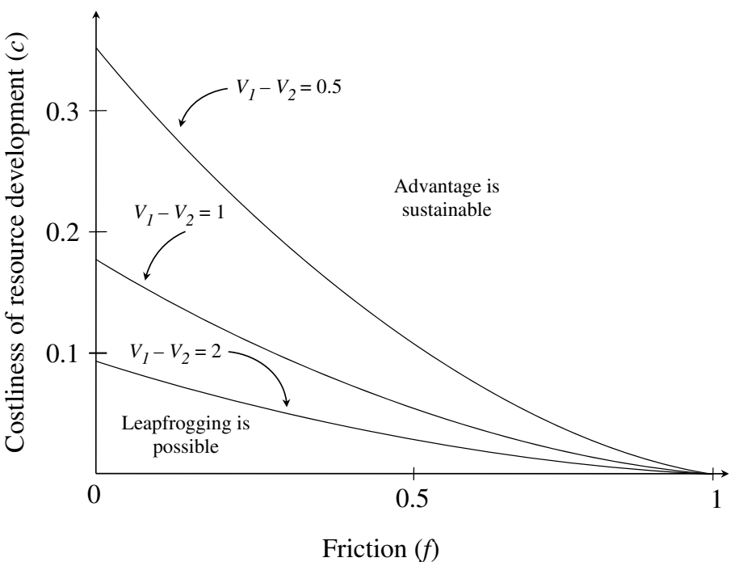

VALUE CREATION AND VALUE CAPTURE WITH FRICTIONS
1 Management Department, The Wharton School, University of Pennsylvania, Philadelphia, Pennsylvania, U.S.A. 2 Strategy Department, INSEAD, Fontainebleau, France
Strategic Management Journal, Strat. Mgmt. J., 32: 1206-1231 (2011). Published online EarlyView in Wiley Online Library (wileyonlinelibrary.com) DOI: 10.1002/smj.939. Received 23 June 2009; Final revision received 26 April 2011.
We use a formal value-based model to study how frictions—incomplete linkages in the industry value chain that keep some parties from meeting and transacting—affect value creation and value capture. Frictions arise from search and switching costs and moderate the intensity of industry rivalry and the efficiency of the market. We find that firms with a competitive advantage prefer industries with less, but not zero, frictions. We show that rivalry interacts nontrivially with other competitive forces to affect industry attractiveness. Firm heterogeneity emerges naturally when we introduce resource development. Heterogeneity falls with frictions, but the sustainability of competitive advantage increases. Overall, we show that introducing frictions makes value-based models very effective at integrating analyses at the industry, firm, and resource levels.
Copyright © 2011 John Wiley & Sons, Ltd.
Keywords: value-based strategy; biform games; industry analysis; rivalry; sustainable competitive advantage
*Correspondence to: Olivier Chatain, Management Department, The Wharton School, University of Pennsylvania, Philadelphia, PA 19104, U.S.A. E-mail: chatain@wharton.upenn.edu
INTRODUCTION
In this paper, we develop a formal analysis of the drivers of firm performance that incorporates critical elements of both industry, firm, and resource levels of analysis. This model is based on the formal literature that has sought to develop value-based foundations of superior performance (Brandenburger and Stuart, 1996, 2007; Lippman and Rumelt, 2003; MacDonald and Ryall, 2004; Adner and Zemsky, 2006; Chatain and Zemsky, 2007).
We introduce the concept of friction in a value-based model to analyze how different levels of rivalry affect both industry structure and firm capability development. Frictions give rise to incomplete linkages between buyers and sellers, which limits the ability of players to find alternatives. This reduces the high degree of rivalry that can be found when the solution concept of the core is used without mitigating factors.1
Our goal is to make value-based strategy more consistent with traditional approaches to industry analysis (Porter, 1980) where rivalry among firms varies at different stages of the industry value chain. We do so in this paper through the introduction of frictions into a stylized model of market competition where the probability of a missing link in the industry supply chain serves to parameterize the intensity of rivalry. Using this model, we can analyze several questions of interest to strategy research. How are value creation and value capture affected by frictions? How do other competitive forces, such as the threat of entry and buyer bargaining power, interact with frictions and affect firm performance? Finally, how do frictions affect the emergence and sustainability of resource-based competitive advantages? By answering this last question we can start to explore the relationship between industry-level competitive forces (Porter, 1980) and the emergence and sustainability of resource-based competitive advantage (Rumelt, 1984; Dierickx and Cool, 1989; Barney, 1991).
1 The most common approach to limiting competition in prior value-based papers is to impose capacity constraints. See Appendix 1 (available online on Wiley Online Library as supporting information) for an example and critique of this approach.
The paper proceeds as follows: the ‘Background’ section gives context on market frictions and on the value-based approach to competitive strategy. The section titled ‘Frictions and Rivaly: An Example’ provides a motivating example that allows us to review value-based analysis and to illustrate some elements of our theory. Motivated readers can skip that section and go directly to the section ‘The Model,’ in which we introduce our base model with frictions. We analyze the effect of these frictions on value creation and value capture in the section titled ‘The Mapping from Value Creation to Value Capture.’ The ‘Barriers to Entry’ section extends the base model to allow for barriers to entry. Finally, the section titled ‘Endogenous Heterogeneity in Value Creation,’ extends the base model to allow for resource development and considers the emergence and sustainability of competitive advantage. The paper ends with a discussion of the results and thoughts on future work.
BACKGROUND
Frictions
There is a long-standing tradition in strategy of linking superior performance to the existence of imperfect competition (Yao, 1988), and competitive frictions play a central role in both the industry-level and resource-level of analysis. In particular, Mahoney (2001) argues that the resource-based view is fundamentally about the set of frictions that enable the capture of sustainable rents. Without any frictions, perfectly competitive product and factor markets assure that all rents are dissipated. We build a unified model to elucidate how industry and resource outcomes vary with the level of product market frictions.

We consider a specific, but important, class of frictions; namely, frictions that give rise to incomplete linkages in the industry value chain. As perfect competition arises when all buyers are always able to play all suppliers against one another, the introduction of such frictions serves to moderate the level of rivalry in the market. Figure 1 illustrates this for a market with two suppliers and four buyers. The left-hand panel shows a situation of perfect competition where each supplier is linked to each buyer and hence competes for its business. The right-hand panel shows a market with frictions in that many of the linkages are missing. While one buyer still has access to both suppliers, the others are served by at most one supplier.2 In addition to moderating the degree of rivalry, frictions also affect market efficiency as buyers are not necessarily served by the supplier that creates the most value. What can give rise to such incomplete linkages? Three broad types of factors can be at the root of these frictions: search costs, transaction costs, and barriers to trade. Search costs (Baye, Morgan, and Scholten, 2006) include the costs associated with discovering potential trading partners. Starting from a situation in which information is lacking (for instance, because of sheer geographical distance), a firm needs to devote resources to gather and process information while these resources have an opportunity cost resulting in a search that does not exhaust all possibilities.
2 Another possible competitive friction is that suppliers tacitly collude in order to lessen price competition. While this may also be important for some markets, especially ones with a stable set of competitors and observed terms of sale, it is not our focus. We focus on suppliers that compete intensely with each other whenever they are both linked to a buyer.
Because of the cost of gathering information and to randomness in the process of discovering new partners, potential buyers may not be able to acquire information about all suppliers, or may even fail to find any. Over time, search costs can change, thanks, for example, to new technologies that make information acquisition and transmission cheaper or to changes in the opportunity cost of search, as when buyers become more motivated to find a good deal.
Transaction costs can also prevent the exploitation of potential ties between buyers and suppliers. The fear of holdup may prevent investments in relationship-specific assets necessary for value creation (Williamson, 1985). If vertical integration is not feasible, for instance because of economies of scale in production, the combination of high transaction costs and heterogeneity in the need for relationship-specific assets would lead some buyers to be more connected than others.
Finally, barriers to trade can create frictions. In particular, international trade barriers can effectively prevent foreign suppliers to compete for buyers within a national market. Trade agreements and efforts to integrate national markets can reduce this type of frictions. For instance, the European Union’s single market policy has been opening national markets to suppliers of other member states in sectors previously protected from international competition. This can be seen as a reduction in market frictions because the reduction in barriers to trade expands the set of suppliers that buyers can consider.
Product characteristics can affect the level of frictions present in their market because they induce more transaction costs and search costs. For example, some markets for new innovative products could be characterized by high frictions. Buyers may need to understand if the new product fits their needs, and suppliers may need to understand which buyers actually value their products. Markets for professional services (e.g., law, consulting) could also be characterized as showing high frictions: switching costs are high and services can be difficult to evaluate. The implication of the existence of high switching costs is that new suppliers may not be worth seeking out, effectively preventing the formation of linkages. Consistent with this idea, Chatain (2011) shows empirically that competition among law firms in the United Kingdom is largely limited to the set of suppliers with whom a given buyer already has a relationship.3
As markets evolve over time, the level of frictions can change. For instance, frictions can increase when radically new products are introduced. However, the definition of standards, the establishment of reputations, and the maturation of technologies can contribute to the reduction of frictions. While the level of frictions can go up or down, we are agnostic as to whether the level of frictions in actual markets are rather low or high and consider the entire range of possibilities in this paper.
We will model frictions as the result of randomness in the matching of buyers to suppliers. This is close in spirit to the urn-ball models proposed in the labor search literature (Petrongolo and Pissarides, 2001) whereby workers and firms match randomly. This modeling strategy is appropriate to model frictions due to imperfection in the matching process. Other sources of frictions leading to imperfect competition, such as increasing returns to scale, non-convexities in production, or sunk costs (Yao, 1988) are outside the scope of this analysis.
We have three main research questions related to the effect of frictions. First, how do frictions affect value creation and value capture at the firm and industry level? Second, to what extent does the effect of rivalry (as determined by the level of frictions) depend on other competitive forces such as the threat of entry and bargaining power? Third, how do frictions affect the emergence and sustainability of resource-based competitive advantages? To build a theory to address these questions, we extend recent work on a value-based approach to strategy.
3 Although we do not focus on frictions related to tacit collusion, there is one type of collusive practice that does relate to the sort of friction we seek to study; namely, where firms split the market and refrain from active competition for one another’s captive customers.
The value-based approach
As originally developed by Brandenburger and Stuart (1996), the value-based approach incorporates key elements of both industry-level and firm-level analyses. A value-based approach starts with the set of players in the industry value chain and the ‘characteristic function’ that specifies the value created by any group of industry players that works together. Different groups create different amounts of value, which reflects the heterogeneity in the underlying resources and capabilities of the players. The central focus in a value-based analysis is on value capture: how total industry value creation is divided among the various players. Following Brandenburger and Stuart (1996), the literature usually focuses on competitive outcomes in the ‘core,’ an equilibrium concept specific to coalitional game theory.4 The core is the set of divisions of total industry value creation such that no industry subgroup can split off and make all of its members better off. The core is very appealing as a solution concept because it requires any agreement on a division of value to be stable.
The use of concepts from coalitional game theory is consistent with the idea that players can extensively bargain over the value they create, thus they are best suited for modeling free-form negotiations among few players. In particular, coalitional game theory concepts are consistent with the idea that exchange is not anonymous. In contrast, classic models of market competition, such as Bertrand and Cournot, assume the existence of a price mechanism that allows for anonymous market clearing. The stage where value is created and captured according to a coalitional game can be preceded by another stage where firms act to set the parameters of the subsequent coalitional game. This preceding stage, where firms interact to create the game, can be analyzed as a noncooperative interaction and solved using the concept of Nash equilibrium. The combination of the two stages forms a biform game (Brandenburger and Stuart, 2007). The decisions made in the earlier, noncooperative stage, are made in accordance with how much firms expect to capture in the second stage. This formalization allows researchers to neatly distinguish between decisions firms make regarding their ability to create value — such as entry in a market, investment in capabilities, positioning choices — and the negotiations regarding value capture. The former stage encapsulates the jockeying among competitors that ‘create the game’ by giving rise to the characteristic functions, while the latter stage takes the characteristic function as given and maps value creation to value capture.
It is commonly argued that the core embodies an extreme form of rivalry (Aumann, 1985), which can be seen as unrealistic (Lippman and Rumelt, 2003). Indeed, competing firms can capture even less value than in Bertrand price competition, which is a standard way to model extreme rivalry.5 But it is important to keep in mind that the outcome of a coalitional model is the result of the combination of two ingredients: the characteristic function and the solution concept (here, the core). Our position is that the solution concept alone is not necessarily to blame if the outcome seems unrealistic. Rather, and consistent with MacDonald and Ryall (2004), we believe that researchers should carefully craft the characteristic function so that the coalitions it allows to form are plausible. This, in turn, may produce more realistic outcomes without having to rely on a different solution concept.
In this paper, we propose a simple parameterization of frictions in order to generate a set of characteristic functions in which a player’s ability to form coalitions and create value is restricted in a tractable way. By varying this parameter, we are able to use the same basic model to examine how different levels of frictions in a market affect value creation and value capture. Modeling friction in this fashion allows us to consider the effect of varying levels of rivalry in a simple way, which is consistent with classic frameworks used in strategy, and especially with the classic five forces framework (Porter, 1980).6
4 Coalitional game theory — also called cooperative game theory — focuses on the coalitions players form to create value, and how the competitive interplay of the coalitions affects value capture. It does not put a structure on the competitive interplay and allows for free-form interactions. In contrast, the more commonly used noncooperative strand of game theory assumes a detailed procedure for competitive interaction and focuses on the optimal moves and countermoves implied by the procedure.
5 In the core, the free-form negotiation between a buyer and its suppliers allows the buyer not only to play its suppliers against each other (as in Bertrand price competition) but also to potentially negotiate an even better deal with the most efficient supplier. See Appendix 1 online for an illustrative example.
6 To realize the original promise of Brandenburger and Stuart (1996) to integrate industry-level and firm-level analyses, value-based strategy should ideally accommodate all the competitive forces traditionally emphasized in industry analysis. Pressure from substitutes and complements are reflected in the characteristic function (Brandenburger and Stuart, 1996). Building on Brandenburger and Stuart (2007), Chatain and Zemsky (2007) introduce a parameterization of bargaining power and barriers to entry. Thus, rivalry is the one competitive threat outside the scope of current value-based analysis.
FRICTIONS AND RIVALRY: AN EXAMPLE
Value creation and competition without frictions
We now consider a simple example that introduces key concepts from value-based strategy including value creation, added value, and the core as a solution concept. We then explain how we incorporate frictions into the characteristic function. Motivated readers can skip this section altogether and go directly to the section titled ‘The Model’ where we present the base model with frictions in its entirety.
We start with the simplest case of a single supplier and buyer. A key input into a value analysis is a specification of the value created by exchange. In this example, suppose that the value created when the supplier serves the buyer is \(V_1 = 10\).7 We assume that a buyer or supplier on its own has no value creation. A player’s added value is what is lost were it to leave the industry. In this simple example, each player is required for the exchange and hence each player’s added value is 10. An outcome is in the core if it divides up the value created and assures that any subgroup of players cannot do better on its own. Because the subset of a single buyer or a single supplier does not create any value, the core allocation for both the buyer and the supplier is anything from 0 to 10, which we write as [0,10].
An important feature of the core is that the outcome can be indeterminate, even in simple situations like this one. This leaves scope for bargaining power to determine how joint value creation is split. Brandenburger and Stuart (2007) introduce a parameter \(\alpha\) in [0,1] that determines which specific division players expect to negotiate within the core interval. In this example, we take \(\alpha = \frac{1}{2}\): each player expects to be at the midpoint of its core allocation. This gives an expected value capture of 5 for both the supplier and the buyer. In simple settings such as this example, the \(\alpha\) parameter is naturally interpreted as an industry-level parameter of the bargaining power of buyers relative to suppliers.8
To introduce competition to the example, let’s suppose there is a second supplier. The buyer only needs one unit, which it can now get from either the first or second supplier. Suppose that the second supplier is not as efficient as the first and its value creation is \(V_2 = 8\). The efficient outcome is still for the first supplier to serve the buyer, which leads to a value creation of 10. However, now the added value of the first supplier is only 2, since the buyer can create 8 by going to the other supplier. As first emphasized by Brandenburger and Stuart (1996), added value gives an upper bound on the value capture of a player. In particular, the core now has the first supplier capturing value in the interval [0,2] and the buyer capturing value in the interval [8,10]. The second supplier has no added value and hence captures nothing. With \(\alpha = \frac{1}{2}\), payoffs are still at the midpoints which yields 9 for the buyer, 1 for the first supplier, and 0 for the second supplier. As one would expect, competition has increased the value capture of the buyer, in this case from 5 to 9. To benchmark this outcome, note that extreme rivalry is often captured as Bertrand price competition with undifferentiated products. In the example, Bertrand competition would lead to payoffs of 8 for the buyer and 2 for the first supplier. This illustrates the idea that the core as a solution concept incorporates extreme rivalry (Aumann, 1985).
Introducing frictions
A central aim of this paper is to introduce frictions into value-based analysis. We define frictions as impediments to the free-form negotiations among all players that is commonly assumed in coalitional models. The key implication of the presence of frictions is to break the assumption that all buyers are able to negotiate and form coalitions with all sellers. As the most intense competition arises when all buyers are always able to play all suppliers against one another, the introduction of frictions serves to moderate the level of rivalry.
7 The value created can be decomposed into the difference between the willingness-to-pay of the buyer and the opportunity cost of the supplier; see Brandenburger and Stuart (1996) for details. Throughout this paper, we reason directly in terms of value created.
8 In general, in coalitional games, the α parameter need not reflect bargaining power. In particular, the expected outcome may not actually lie in the core (Brandenburger and Stuart, 2007). Chatain and Zemsky (2007) provide general conditions under which the α parameter can be naturally interpreted as reflecting bargaining power. These conditions imply the absence of capacity constraints, of externalities, and of complementarities in added value. The examples and models in this paper satisfy these general conditions and hence we interpret α as relative bargaining power.
Here, we present frictions as the outcome of randomness in the matching of buyers to suppliers. Concretely, suppose that a buyer is unaware of a given supplier with probability f, which parameterizes frictions for this market. We take these probabilities as independent across suppliers. A potential buyer can be in one of four cases: connected to both suppliers, connected to Supplier 1 only, connected to Supplier 2 only, or connected to none. In the example, we set f = 1/2. Then a buyer is equally likely to fall into each of the four cases. It is straightforward to generalize the example to include many buyers, in which case the expected proportion of buyers that fall into each of the four possible cases would be of the same size.9
How do frictions affect value creation and value capture? Without frictions, value creation is 10. Now only half of the time does the buyer have access to Supplier 1 and its value creation of 10. One quarter of the time the buyer has access to just Supplier 2 for a value creation of 8. In expectation, the value creation is reduced to \(\frac{1}{2}V_1 + \frac{1}{4}V_2 = 7\). There are two sources of the fall in value creation: some buyers are served by a less efficient supplier and some buyers go unserved. Importantly, the inefficient Supplier 2 can now expect to capture value equal to: \(\frac{1}{4}\alpha V_2 = 1\).
Does the shrinking pie and increasing role of Supplier 2 negatively impact Supplier 1? Not in this example. The first supplier captures value whether or not Supplier 2 is in the choice set of the buyer, but it captures more \((\alpha V_1)\) when it is alone than when it is in competition \((\alpha(V_1 - V_2))\). The first supplier’s expected value capture is then \(\frac{1}{4}\alpha V_1 + \frac{1}{4}\alpha(V_1 - V_2) = 1.5\), which is more than the value capture of 1 without frictions. The reduction in rivalry more than makes up for the fact that Supplier 1 is now able to serve the buyer only with a probability of \(1/2\). In contrast, the shrinking value creation and falling rivalry among its suppliers leaves the buyer unambiguously worse off. Its expected value capture falls from 9 to 3.5.
Now consider the incentives of suppliers to invest in resources that increase their ability to create value. If a supplier expects to be the less efficient firm, its profits depend on its value creation according to \(\frac{1}{4}\alpha V_2 = \frac{1}{8}V_2\). If a supplier expects to be the more efficient firm, its profits depend on its value creation according to \(\frac{1}{4}\alpha V_1 + \frac{1}{4}\alpha V_1 = \frac{1}{4}V_1\). Hence, the supplier that expects to be more efficient indeed has greater incentive to invest in resource development than the less efficient one. When embedded in an equilibrium analysis (see the section ‘Endogenous Heterogeneity in Value Creation’), these differential incentives give rise to asymmetric positions in the market where expectations of market leadership are self-reinforcing even in the case when firms start out homogeneous (i.e., \(V_1 = V_2\)) and with equal access to investment opportunities. Next, we formally specify the model and generalize the above analysis to arbitrary values of \(V_1\), \(V_2\), \(\alpha\) as well as different values of \(f\) depending on the supplier.
9 In this example, we emphasize the probabilistic interpretation of the parameter f.
THE MODEL
We specify the model in two steps. We first characterize profits of one or two suppliers competing for a given buyer. We then introduce frictions that probabilistically puts a buyer in situations that differ in the sets of available competing suppliers.
Buyer-suppliers interactions
There are two competing suppliers, which we label by i = 1, 2. We start by specifying the value creation possibilities when there is a single buyer, which we denote by B. The characteristic function v(s) gives the value creation for any set of players s. We assume:
Supplier 1 can weakly create more value than Supplier 2, that is, \(V_1 \ge V_2\). We now characterize core allocations. The core is the set of allocations of value such that no subset of player can appropriate more value by breaking away from the grand coalition. Formally, write \(x_i\) the value captured by player \(i\). The core is defined by two conditions:
where N is the set of all players and G is a subset of N. The first condition ensures efficiency: the maximum possible value is created and then divided among the players. The second condition ensures stability: each subset of players receives at least as much as it can make independently of the other players.
Consider the case where both suppliers are competing for the buyer so that N = {1, 2, B}. It is easy to show that the set of core allocations are:
The interpretation is straightforward. The total value created is V_1. Supplier 2, which is the less efficient supplier, cannot appropriate anything because it has no added value. The buyer can play the two suppliers against each other and, hence, is guaranteed at least V_2. The remaining value (V_1 − V_2) depends on negotiations between the buyer and Supplier 1.
Following Brandenburger and Stuart (2007), we map the core allocations into expected value capture by introducing a parameter αi representing each player’s expectations regarding its ability to capture value through bargaining. We set αB = α and α1 = α2 = 1 − α, which allows us to interpret α as the bargaining power of buyers relative to suppliers.10 Expected value capture is then:
10 Our model satisfies the general conditions in Chatain and Zemsky (2007, Assumptions 1, 2, and 3) such that the αi parameters can be naturally interpreted as relative bargaining power of buyers over sellers.
The second case we examine is when a buyer faces a single supplier so that N = {i, B} for i ∈ {1, 2}. The core allocation is characterized by:
This is a bilateral monopoly. Neither player has an effective threat it can use to guarantee itself a minimum of value capture, and the allocation of value is therefore completely indeterminate. With relative bargaining power still given by α, we get the following expected value capture:
For those readers familiar with the classic theories of industrial organization, it is worth noting that Bertrand competition is a special case of this model with α = 0.
Frictions and product market competition
| Sets of suppliers competing for the buyer | Probability |
|---|---|
| Supplier 1 and Supplier 2 | \((1 - f_1)(1 - f_2)\) |
| Supplier 1 only | \((1 - f_1)f_2\) |
| Supplier 2 only | \(f_1(1 - f_2)\) |
| None | \(f_1 f_2\) |
The manner in which coalitional games that model markets are typically set up, all players would be assumed to negotiate and all possible coalitions would be allowed to form. We assume that frictions may limit the set of available suppliers for the buyer. We model this by introducing a probability f_i (f_i ∈ [0,1]) that supplier i fails to meet the buyer. Therefore f_i is a measure of the degree of frictions faced by supplier i. These probabilities are independent across suppliers. Another way to interpret the role of this probability is to envision an additional player in the game (nature) that randomly determines which suppliers are available to the buyer—and consequently which characteristic function is used to compute the payoffs. With two possible suppliers, there are four possible cases whose probabities of occurrence are presented in Table 1.
11 Grossman and Shapiro (1984) use a similar partition of the market in their pioneering theory of informative advertising. In their model, the proportion of customers that is reached by each firm is endogenous and firms compete on price in a circular city, thus allowing for horizontal differentiation. In contrast, we take the proportions as exogenous, the products in our model are vertically differentiated, and we allow for negotiated prices.
12 The possibility of introducing uncertainty on the nature of the characteristic function is mentioned by Brandenburger and Stuart (2007: 541, fn 14).
The right-hand panel of Figure 1 illustrates the four cases. In the first case, the two suppliers both compete for the buyer. In the second and third cases, suppliers are shielded from competition and enjoy a monopoly position. Finally, in the fourth case, the buyer is left unserved by suppliers. Here, the assumption is that the buyer is going with the next best alternative outside of the competitive interaction represented by the model. This could be by (i) doing entirely without the input, (ii) producing it internally, or (iii) using a generic input (while the focal suppliers in the model are assumed to offer a differentiated product). It can be noted that as frictions increase, the probability of head-to-head competition falls and inefficiencies due to unserved buyers and inefficient matches increase.
Instead of a model with only one buyer, the model can be extended to include M buyers, as long as the assumptions in Chatain and Zemsky (2007) are respected (in particular, no capacity constraints for the suppliers, and no externalities in consumption). If there are M buyers, then the expected number of buyers that falls into each case is given by the product of the probability of each case for one buyer and M. For example, one will expect \((1 - f_1)(1 - f_2)^2 M\) buyers for which the two suppliers compete. For simplicity and without any loss of generality, we take M = 1 and will interpret the results accordingly in the rest of the paper. Another interpretation of the buyer side would lead to similar expected value capture and creation functions. In that interpretation, the buyer side is a continuum of arbitrary small players, which can be split into four segments depending on the set of suppliers serving them. The relative size of each segment is then equal to the probability that a buyer falls into one of the four cases. However, throughout the paper we emphasize the interpretation in terms of uncertainty in the matching of a buyer to the suppliers.
THE MAPPING FROM VALUE CREATION TO VALUE CAPTURE
Value-based strategy provides an explicit mapping from the value creation possibilities of participants in an industry value chain to their value capture. We now characterize how the frictions in our model moderate this mapping.
The expected total value creation is given by the following formula:
Supplier 1 creates V_1 of value whenever it is in the choice set of the buyer, which occurs with probability 1 − f_1. Supplier 2 creates V_2, but only when it is in the choice set and Supplier 1 is not, which occurs with probability \((1 - f_1)f_2\).
Using the value capture expression from the section ‘Buyer-Suppliers Interactions’ and the expected proportions for each case from the section ‘Frictions and Product Market Competition,’ the expected value capture of Supplier 1 is
Active in only one case—when it is the only option available to the buyer—the expected value capture of Supplier 2 is Π_2 = f_1(1 − f_2)(1 − α)V_2. The expected value capture of the buyer is given by V_G − Π_1 − Π_2, that is, the total expected value created minus the expected profits of the suppliers.
Heterogeneity in frictions
Firms can conceivably influence unilaterally the level of frictions they face. For instance, if frictions are due to geographically dispersed customers, suppliers can open offices or plants in different locations to improve customer access. Advertising can increase customer awareness of a firm’s products and firms can make efforts to develop a better reputation and foster trust with potential customers.
Moreover, studying the impact of competitor frictions on a supplier’s value capture enables us to isolate the effect of frictions as they change the set of competitive alternatives available to the buyer. The following proposition details the effect of frictions on profits.
Proposition 1: With heterogenous frictions parameters: (i) A supplier's value capture decreases in its own friction \((\partial \Pi_1/\partial f_1 < 0,\ \text{and}\ \partial \Pi_2/\partial f_2 < 0)\); (ii) A supplier's value capture increases in its competitor's friction \((\partial \Pi_1/\partial f_2 > 0,\ \text{and}\ \partial \Pi_2/\partial f_1 > 0)\); (iii) Frictions are strategic substitutes with regard to value capture \((\partial^2 \Pi_1/\partial f_1\partial f_2 < 0,\ \text{and}\ \partial^2 \Pi_2/\partial f_1\partial f_2 < 0)\).
Not surprisingly, a supplier’s value capture decreases in its own friction parameter. An increase in frictions reduces the probability of meeting the buyer and reduces the expected value creation opportunities. Conversely, when competitors face more frictions, value capture increases because the buyer is less likely to have access to an alternative supplier, which reduces its ability to capture value. Part (iii) of the proposition highlights that actions to reduce frictions are strategic substitutes. To see why, consider that a decrease in frictions serves to increase the probability that a supplier establishes a link with the buyer. The expected value captured from the buyer is lowest if the buyer also has a link with the competing supplier. So, if the competing supplier acts to decrease its friction parameter, a supplier’s expected returns to lowering its own friction parameter are reduced.
Common friction parameter
In the remainder of the paper, we restrict our attention to the case f_1 = f_2 = f, which is consistent with the idea that frictions are a characteristic of the industry as a whole rather than of any firm in particular. This also closely approximates the situation where firms have little leeway to change their own friction parameter.

We now have expressions showing how value creation and value capture vary with frictions. We illustrate the general results in the paper graphically using the parameter values V_1 = 10, V_2 = 9, α = 0.3. Figure 2 plots value creation (solid line) and value capture (dashed lines) for different values of the market level friction parameter f.
13 In a slight abuse of language, and for conciseness, we write value capture and value creation while in the probabilistic interpretation of the model these are expected value capture and value creation.
Value creation decreases in the level of friction. However, supplier value capture is nonmonotonic in the level of frictions, first increasing and then decreasing. This pattern is quite general as shown in the following proposition.14
Proposition 2: (i) Value creation decrease monotonically with market friction f. (ii) Value capture for Supplier 2 follows an inverted U-shaped relationship and there is an optimal level of frictions f_2^* strictly between 0 and 1 that maximizes Supplier 2’s value capture. (iii) For V_2 > V_1/2, value capture for Supplier 1 follows an inverted U-shaped relationship and there is an optimal level of frictions f_1^* strictly between 0 and 1 that maximizes Supplier 1’s value capture. For V_2 ≤ V_1/2, value capture for Supplier 1 is monotonically decreasing in f and f_1^* = 0. (iv) Weaker suppliers prefer more frictions, that is, f_1^* < f_2^*.
In part (i), value creation falls with frictions for two reasons. First, the probability that the buyer is unserved increases. Second, the probability that the buyer is served by the less efficient firm increases as well. Part (ii) follows from the fact that Supplier 2 can only appropriate value when it reaches the buyer and Supplier 1 does not. This happens with probability \((1 - f)f\), which is highest at \(f = 1/2\). Part (iii) follows a similar logic. Supplier 1 captures the highest value from an exchange with a customer when it does not compete with Supplier 2 (with probability \((1 - f)f\)) but also captures value, albeit less, if it competes with Supplier 2 (with probability \((1 - f)^2\)), which maximizes value capture for a lower level of friction than that of Supplier 2 (part (iv)). If the impact of competition from Supplier 2 is very low (\(V_2 \le V_1/2\)), Supplier 1 is better off with as little friction as possible.
The industry-level approach to superior performance emphasizes taking actions to reduce competitive pressures. On the other hand, firm-level approaches emphasize developing a competitive advantage. Makadok (2009) considers the interaction between these two prescriptions. Across a variety of models, he finds that their interaction is negative for a firm with a competitive advantage. Formally, he shows that the cross-partial of rivalry reduction and efficiency on an advantaged firm’s profits is negative. The intuition is that when rivalry is reduced, there are less returns to investing in higher efficiency. We find a similar result in our model, and extend Makadok’s (2009) analysis to the disadvantaged firm.
Proposition 3: (i) For the advantaged Supplier 1, value creation and friction have a negative interaction effect on supplier value capture. Formally, \(\frac{\partial^2}{\partial V_1 \partial f}\Pi_1 < 0\). (ii) For the disadvantaged Supplier 2, value creation and friction have a negative interaction effect on supplier value capture only if frictions are sufficiently high. Formally, \(\frac{\partial^2}{\partial V_2 \partial f}\Pi_2 > 0\) if \(f < \frac{1}{2}\) and \(\frac{\partial^2}{\partial V_2 \partial f}\Pi_2 \le 0\) if \(f \ge \frac{1}{2}\).
We find that there is no clear interaction effect for the disadvantaged firm. A firm’s incentive to invest in value creation depends on the probability that it will actually serve the buyer, which, for the disadvantaged Supplier 2, first increases with frictions and then decreases.
BARRIERS TO ENTRY
In the previous section, we saw that a simple friction parameter extended the value-based approach to allow for varying degrees of industry rivalry. Classic industry analysis identifies five sources of competitive pressures (‘forces’) including rivalry. In our model, so far, the classic competitive force from substitutes (and complements) is reflected in the definition of value creation. Relative bargaining power of buyers and suppliers are reflected in the α parameter. With the addition of friction, our value-based analysis now incorporates rivalry.
The only classic source of competitive pressure missing from the base model is the threat of entry. This is easily rectified and we do so in this section. We follow Chatain and Zemsky (2007) and a long-standing tradition in industrial organization by first assuming that suppliers have to decide whether to enter the industry, and then parameterizing the extent of barriers to entry by the size of the fixed costs required to serve the market. Our main focus in extending the industry-level analysis is to examine the extent to which one can actually analyze different competitive forces in isolation as is suggested by textbook treatments of this subject (e.g., Grant, 2005).
14 The proofs of all propositions are online in Appendix 2.
The entry barriers model extension
We add an initial stage to the game where suppliers decide whether or not to enter. This gives rise to a biform game (Brandenburger and Stuart, 2007) with an initial stage that uses traditional noncooperative game theory to model competitive interactions around well-defined strategic actions in this section: entry into the market. The second stage, where those suppliers that have entered negotiate with buyers, is the coalitional game described in the base model, where one also needs to treat the case where only a single supplier enters.

The time line is illustrated in Figure 3. In the initial stage, suppliers decide whether to enter. If they enter, they incur a fixed cost F. After this, the buyer and the suppliers meet in the market, according to the friction parameter f and then negotiate and share the value created.
We have the following value capture functions. A supplier that enters and is alone in the market expects to meet the buyer with probability 1 − f and has no competition. Thus, the supplier’s value capture is:
When both suppliers enter the market, the expected value capture is as before:
where we maintain the assumption that \(V_1 \ge V_2\). Finally, a supplier that does not enter has a value capture normalized to \(\Pi_i^{NE} = 0\). Note that firm profits are value capture net of the fixed costs of entry \(F\).
We solve the first stage for pure strategy Nash equilibria. This requires that suppliers that enter have nonnegative profits and that any supplier that stays out does not have a positive profit from entering. For example, it is an equilibrium for only Supplier 1 to enter if and only if \(\Pi_1^M \ge F\) and \(\Pi_2^D \le F\) so that Supplier 1 covers its entry costs but Supplier 2 would not if it were to enter. We want to restrict the parameters such that it is possible for the market to sometimes support both suppliers. This requires that the fixed costs are not too large, specifically \(F \le \frac{1}{4}(1 - \alpha)V_2\).
15 To derive this expression, we need to assure that for some values of \(f\) both \(\Pi_1^D\) and \(\Pi_2^D\) are at least \(F\). Note that \(\max_f \Pi_2^D = \frac{1}{4}(1 - \alpha)V_2\) and \(\Pi_1^D \ge \Pi_2^D\) for any \(f\). Hence, the market can support both suppliers for some values of \(f\) as long as \(F \le \frac{1}{4}(1 - \alpha)V_2\).
The interaction between threats of entry and rivalry

Figure 4 illustrates the joint effect of rivalry reducing frictions and barriers to entry on the mapping from value creation to value capture. The figure shows supplier value capture under both monopoly and duopoly, as well as the fixed cost of entry. We will establish that there is a nonmonotonic and discontinuous effect of friction on value capture, with a complex interaction with the height of barriers to entry. The following discussion outlines which types of entry patterns can be supported at equilibrium. We will frequently refer to Figure 4 to illustrate the logic of the argument. We first look for symmetric pure strategy equilibria, that is, when the two suppliers have the same strategy at equilibrium. Given the cost of entry F, we determine the values of the friction parameter f for which entry by both suppliers is an equilibrium.
Expected supplier profits are given by subtracting the fixed cost \(F\) of entry to the value captured after entry. Value captured after entry depends on whether the supplier is a monopolist or a duopolist, which is reflected in the two value capture curves shown in Figure 4. As can been seen in the figure, Supplier 2 makes positive profits upon entry while Supplier 1 has also entered whenever Supplier 2’s value capture curve as a duopolist is above the horizontal line representing the level of the cost of entry \(F\). We see that this is the case for intermediate values of the friction parameter \(f\), specifically when \(f\) is above \(f_L^D\) and below \(f_H^D\). It is easy to see that with these values of \(f\), entry by Supplier 1 is also profitable as its value capture curve as a duopolist is also above \(F\). Moreover, one can check that either suppliers as a monopolist, would also make positive profits for \(f\) between \(f_L^D\) and \(f_H^D\). This implies that it is a dominant strategy for both suppliers to enter whenever \(f\) is above \(f_L^D\) and below \(f_H^D\). Thus, entry by both suppliers is an equilibrium for these values of \(f\).
Not entering is also a dominant strategy for both suppliers when \(f\) is larger than \(f^M\), in the rightmost part of the figure. In this area, no supplier can hope to make a positive profit regardless of the decision made by the other supplier as value capture is less than \(F\) in any market configuration.
We now turn to the analysis of asymmetric equilibria, where one supplier enters but the other stays out. There are two ranges of value of \(f\) for which it is a dominant strategy for Supplier 1 to enter while entry by Supplier 2 is deterred. This happens for values of \(f\) between \(\hat f_1\) and \(f_L^D\), as well as between \(f_H^D\) and \(\hat f_2\). The logic is as follows. We can see in Figure 4 that in these two ranges of values of \(f\), Supplier 1 is making positive profits both as a monopolist and as a duopolist. Its two value capture curves are above the horizontal line at height \(F\) that represents the cost of entry. Supplier 1 therefore enters regardless of Supplier 2’s entry strategy. However, we see also that the fixed cost of entry (horizontal line at level \(F\)) is above the value captured by Supplier 2 as a duopolist. Supplier 2 is thus better off staying out because it is sure to lose money if Supplier 1 enters and can be assured that Supplier 1 will always enter.
It is a dominant strategy for Supplier 2 to stay out if \(f\) is in the \(\hat f_3\) to \(f^M\) interval. For these values of \(f\), the entry of Supplier 2 cannot be profitable regardless of Supplier 1’s action as Supplier 2 would not even break even as a monopolist (its value capture curve is below \(F\)). Given this, Supplier 1’s best response is to enter, as it can make positive profits as a monopolist in this range of values of \(f\).
Finally, there are two ranges of values of \(f\) for which there are two pure strategy Nash equilibria whereby one supplier enters and the other stays out. This happens whenever the two suppliers’ monopoly value capture curves are above the fixed cost line at \(F\) while the duopoly value capture curves are below the line. In such configuration, each firm’s best response to entry by its competitor is to stay out, while its best response to the competitor staying out is to enter. This happens for \(f\) between 0 and \(\hat f_1\) and between \(\hat f_2\) and \(\hat f_3\).
The pattern for the example represented in Figure 4 holds more generally, as formalized in the following proposition:
Proposition 4: Consider the extension of the model with entry decisions. There exists three critical friction levels \(0 < f_L^D \le f_H^D < f^M < 1\) such that: - if \(0 < f < f_L^D\), only one supplier enters; - if \(f_L^D < f < f_H^D\), both suppliers enter; - if \(f_H^D < f < f^M\), only one supplier enters; - if \(f^M < f\) no supplier enters.
As a result, there is a range of parameters for which the equilibrium is asymmetric in that only one supplier enters, while the other stays out. This range can be divided in one part where the unique equilibrium is Supplier 1 enters, and another one where either supplier can enter and remain a monopolist. The privileged position of Supplier 1 is due to its having a competitive advantage in the product market (V_1 > V_2) which widens the range of parameters for which its entry is profitable.
Proposition 5: The region where only one supplier can enter can be split into two subsets, one where only Supplier 1 can become the monopoly supplier (for \(\hat f_1 < f < f_L^D\) and \(f_H^D < f < \hat f_2\)) and one where either supplier could become the monopolist (for \(0 < f < \hat f_1\) and \(\hat f_2 < f < \hat f_3\)).

Hence, even in our simple model, the effect of frictions on firm value capture becomes quite complex when there are barriers to entry. For low levels of frictions, there is a monopoly supplier whose high profits fall as frictions increase. At the critical value f_L^D, expected value capture under competition is sufficiently reduced that the market can support a second supplier. This leads to a discontinuous reduction in industry profit. Profits then increase in frictions before starting to fall again. When frictions reach the critical level f_H^D, the expected market size becomes too small to support both firms, and industry profits jump up as Supplier 2 is no longer viable, leaving Supplier 1 in a monopolistic position. Profits then fall again as frictions increase. This is illustrated by Figure 5 where the thick line shows the profits of Supplier 1 (assuming it enters whenever it is possible).
Our results highlight the danger of considering in isolation the effect of different competitive forces on industry attractiveness.
The creation of discontinuities and non-monotonicities by entry decisions is not exclusively connected to frictions. In our model, an increase in buyer power (α) results in a fall in all of the value capture curves. However, this can potentially cause the value capture of the supplying industry to increase in the bargaining power of buyers due to a shift in industry structure. Indeed, changes in bargaining power affect the levels of the friction thresholds determining entry. A fall in bargaining power can flip the equilibrium industry structure from a duopoly to a monopoly, thereby increasing industry profits. The following proposition formalizes this point.
Proposition 6: (i) The region where both firms enter decreases the relative bargaining power of buyers. That is, ∂f_L^D/∂α > 0 and ∂f_H^D/∂α < 0. (ii) An increase in α when f is above but arbitrarily close to the critical threshold f = f_L^D leads to an increase in the total value capture of the suppliers.
Moreover, it has to be noted that the existence of discontinuities in value capture by suppliers also implies that there are values of f for which buyers may have an incentive to subsidize entry in order to change the market structure to their advantage. For instance, if f is just below f_L^D, a buyer would gain a lot if Supplier 2 entered and increased competition and could thus afford to subsidize Supplier 2’s entry. A similar issue is analyzed in a related model by Chatain and Zemsky (2007).
ENDOGENOUS HETEROGENEITY IN VALUE CREATION
The strategy literature emphasizes that firms are heterogeneous. For example, such thinking is at the root of the resource-based view, where firms are seen as endowed with different resource bundles. Following in this tradition, our base model takes firm heterogeneity—as reflected in differences between V_1 and V_2—as given. Of course, what are the sources of firm heterogeneity is a fundamental question in the strategy field (Rumelt, Schendel, and Teece, 1994) and this is where we turn now.
We extend our theory to consider situations where firms can invest in resources and capabilities that increase their value creation. We can then use the model to speak to two fundamental issues in the strategy field. First, when firms are initially the same, to what extent does heterogeneity arise endogenously when firms have equal access to resource development opportunities? Second, when firms are initially heterogeneous, to what extent do additional resource development opportunities reinforce and sustain a leader’s competitive advantage? Conversely, can a follower potentially leapfrog the leader and establish a competitive advantage?
The resource development model extension
We again consider a biform game. The first stage of the biform game now involves resource development by the two suppliers. The suppliers have an initial value creation of V_1 ≥ V_2. In the foregoing discussion we interchangeably denote Supplier 1 and 2 with index i and the other supplier with index j. Supplier i’s final value creation is V_i + r_i where r_i is the extent of resource development. There is an increasing and convex cost of resource development given by c(r_i) = cr_i^2, where c parameterizes the costliness of resource development. We do not consider entry decisions in this extension. The second stage of the biform game is given by the base model described in the section ‘The Model,’ keeping the assumption f_1 = f_2 = f, and with two other differences. First, supplier i’s value creation is now V_i + r_i (rather than V_i). Second, profits are net of resource development costs.16 Supplier i’s profit function depends on whether it has the higher value creation. In particular, for i ≠ j we have that
16 We define profits as value capture in the second stage net of costs borne in the first stage. In this section we use Πi to denote these profits, while in previous sections we used Πi to denote value capture.
The key difference between the two parts of the profit function is that a supplier that is at a disadvantage only captures value when it has access to the buyer and the other supplier does not. We solve the first stage of the biform game for a pure strategy Nash equilibrium in resource development levels decisions.
The emergence and sustainability of competitive advantage
The fact that the profit function is different depending on which supplier has the highest value creation has important implications for the emergence and sustainability of a competitive advantage. The profit function implies that a supplier that expects to have an advantage in the product market obtains higher returns from investing in the resource than a supplier that does not expect to have an advantage. The expectation of leading in the product market, given the competitor’s investment level, may justify a high level of investment in the resource, which in turn entails the firm taking the leading position. Conversely, the anticipation of not being the leader in the product market would induce lower investment and, in turn, the confirmation of the follower position. Depending on how these dynamics play out, an initial advantage may or may not be sustainable. Now, we analyze in detail the incentives to invest in a resource depending on the expected relative position in terms of value creation and the implications for the equilibrium of the resource development extension of the model.
To analyze the incentives to invest in a resource, note that if supplier i has an advantage in value creation over supplier j (i.e., Vi + ri > Vj + rj) then supplier i’s marginal increase in value capture in the product market thanks to resource development is (1 − α)(1 − f). For supplier j, a marginal increase in resource development would translate into a marginal increase of value capture of only (1 − α)f(1 − f). Thus, a supplier’s incentives to invest depend fundamentally on whether it expects to have superior value creation over its competitor. Accounting for the cost of development, we derive the optimal investment levels depending on their relative position of a supplier in terms of value creation:
Lemma 1: In the resource development extension, a supplier’s optimal level of resource development takes one of two values, \(r^H > r^L\), where
Supplier \(i\) invests in resource level \(r^H\) if it expects to end up with a competitive advantage over supplier \(j\) (i.e., \(V_i + r_i > V_j + r_j\)) and in resource level of \(r^L\) if it expects to be disadvantaged (i.e., \(V_i + r_i < V_j + r_j\)). Moreover, the difference in optimal levels of resource development, \(r^H - r^L\), is falling in the level of frictions.

Because there are two discrete possible marginal increases of value capture due to a marginal increase in \(r\), there are two different optimal values: \(r^H\) if the marginal increase in value capture is high, and \(r^L\) if the marginal increase in value capture is low. Figure 6 illustrates how the two possible levels of resource development vary in the level of frictions in the market.
The existence of two discrete levels of investment has implications for the weaker supplier’s ability to leapfrog the leader. Obviously, if \(V_1 - V_2\) is larger than \(r^H - r^L = (1 - \alpha)(1 - f)^2/2c\), there is no possibility for Supplier 2 to become the new leader. However, the full analysis of the equilibrium conditions shows that the range of values of \(V_1 - V_2\) allowing for a change in industry leadership is even narrower than \(r^H - r^L\):17
Proposition 7: Consider the resource development extension with \(V_1 < V_2\). If \(V_1 - V_2 < \frac{(1-\alpha)(1-f)^2}{4c}\), then there are two pure strategy Nash equilibria: (i) A ‘sustaining’ equilibrium where \(r_1^* = r^H\) and \(r_2^* = r^L\) so that the initial market leader increases its competitive advantage. (ii) A ‘leapfrogging’ equilibrium where \(r_1^* = r^L\) and \(r_2^* = r^H\) so that the initially weaker firm becomes the market leader. If \(V_1 - V_2 > \frac{(1-\alpha)(1-f)^2}{4c}\), the ‘sustaining’ equilibrium is the unique pure strategy Nash equilibrium.
If inequality (1) holds, we have another case of multiple equilibria. From a game-theoretical point of view, nothing in the game itself can help us decide which of the sustaining and the leapfrogging equilibria is most likely to emerge. One of the most influential approaches to this problem was offered by Thomas Schelling. Schelling (1960) argued that a particular equilibrium is more likely to be played if it is ‘focal,’ that is, if social and cultural factors make players expect it to be played and ensure consistent expectations.18 The context and the expectations leading to such selection based on focal points is not captured in our formalism. However, one can speculate that managing expectations about market leadership can make an advantageous equilibrium focal and, hence, it can be a driver of superior performance. Put differently, if the strategic interactions among suppliers exhibit multiple equilibria, then firms clearly have incentives to manipulate expectations.
17 If \(V_1 - V_2 < r^H - r^L = (1 - \alpha)(1 - f)^2/2c\), Supplier 2 could conceivably invest at level \(r^H\) and be the leader if Supplier 1 invests at level \(r^L\). However, this cannot be part of a pure strategy equilibrium if \(V_1 - V_2 > \frac{(1-\alpha)(1-f)^2}{4c}\). In that case, when Supplier 1 invests at level \(r^L\), Supplier 2 is still better off investing at \(r^L\) rather than \(r^H\). The reason is that the additional expected value capture per customer is not covering the resource development costs. But then, if Supplier 2 invests at level \(r^L\), Supplier 1’s best response is to step up and invest \(r^H\).
18 Focal points are particularly important in coordination games. A famous example of a focal point in a game where players need to independently coordinate to meet in New York City is the Grand Central train station.
This result also has implications for the emergence of competitive heterogeneity. It is easy to extend Proposition 7 to a situation where suppliers are initially identical and see that resource development can endogenously create heterogeneity.
Corollary 1: Consider the resource development extension where the two firms are initially homogeneous (i.e. \(V_1 = V_2\)). All pure strategy Nash equilibria are asymmetric and imply that one supplier ends up with a competitive advantage and develops resources at level \(r^H\) while the other develops resources at level \(r^L\).

An important question in strategy is the extent to which an advantage is sustainable. Examining Proposition 7, we see that it is always an equilibrium for an initial competitive advantage to be sustained.19 However, when inequality (1) holds, the leader’s initial competitive advantage is vulnerable if the follower can create expectations that it is the one to more aggressively exploit the opportunity to invest in the new resource. Figure 7 illustrates how the leader’s competitive advantage is more likely to be secure when: the initial heterogeneity V_1 − V_2 is greater, friction in the market f is greater, and the cost c of developing new resources is higher.
19 While much work in strategy operationalizes sustainability in terms of the interval of time over which an advantage is sustained, our emphasis is different. We focus on a definition of sustainability based on strategic incentives, specifically whether a follower can have an incentive to out-invest the leader given the leader’s optimal reaction.
Our analysis of sustainability illustrates the importance of accounting for elements commonly thought of at separate levels in strategy analysis. At the industry level, our condition on sustainability depends on the extent of competitive frictions f; at the firm level, on the level of initial advantage V_1 − V_2; and at the resource level, on the ease of developing resources c.
DISCUSSION AND CONCLUSION
In this paper, we start with a model of value creation and value capture in a product market based on a coalitional game. We add a simple friction parameter to reflect that incomplete linkages between buyers and suppliers can give rise to imperfect competition. This allows us to parameterize in a simple manner the intensity of competition in the standard value-based framework while keeping the benefits that this framework brings for strategy theorizing. Given the importance of frictions in strategy scholarship, we see this as a useful extension of value-based analysis.
The model we present in this paper has some limitations. Key to the model is the contrast between two types of buyers: those served by one supplier, allowing high value capture by the supplier, and those served by two suppliers, allowing lower value capture. If more suppliers are added and the friction parameter is kept constant, the probability that a buyer is served by only one supplier will decrease and so will the expected value capture by suppliers. The insights from our model with two suppliers and a given level of friction could however still be transposed to a model with more suppliers and a higher level of friction. Indeed, keeping the number of suppliers constant, the probability that a buyer is served by only one supplier, conditional on being served at all, is increasing in the friction parameter.
A different line of argumentation is that the assumption of a small number of suppliers can be realistic if entry into the industry is limited to a few firms. This could be, for instance, because of economies of scale in production or because the factors needed for competing in the product market (e.g., the intellectual property) are intrinsically scarce.
Relationship to economic literature on search and buyer-supplier networks
The overall focus of this paper is quite different from that of models of search developed and used in economics. We explore how frictions affect business strategy decisions, such as entry and investment in capabilities, while research in economics focusing on search models has been concerned with explaining the mechanism and explaining the widely observed dispersion of prices (including wage differentials) for similar goods in the economy (Baye et al., 2006) or with the shape of aggregate functions matching workers to firms in the economy (Petrongolo and Pissarides, 2001).
In particular, models of sequential and simultaneous searches seek to understand the optimal strategies of buyers (e.g., when to stop searching) and suppliers (e.g., what price to post). We abstracted away from these questions by directly assuming a random matching process that produces inefficiencies, while the inefficiencies in matching are the outcome of interest of the full-fledged search models. However, in keeping with that literature, we do find that less efficient suppliers prefer an environment with more frictions as frictions protects them from competition. However, in our model, prices become implicitly more dispersed as frictions increase, while the search cost literature is inconclusive in that regard. It is indeed possible to build models where lower search costs create more price dispersion (Baye et al., 2006).
Our model also relates to models of buyer-supplier networks. The matching technology essentially produces a particular case of a random bipartite network. For instance, research by Corominas-Bosch (2004) explores the implications of the configuration of general bipartite networks on value capture and reaches conclusions consistent with those of our coalitional game stage.
Implications for value-based strategy research
Value-based models are not always easy to use, if only because the core solution concepts can give, in some cases, seemingly unrealistic results. This has led some scholars to criticize the use of the core (Lippman and Rumelt, 2003) while still recognizing the merits of the coalitional formalism. In this paper we take a different position: we concur that the use of the core can lead to unrealistic results, but we locate the problem mainly in how the characteristic function is set up, not necessarily in the solution concept itself.
In order to address this issue, we implement a simple way to model frictions in a market, which allows parameterizing the availability of outside opportunities to players, and, as a result, the intensity of competition in the game. We believe that this contributes to make the value-based models even more relevant to business strategy research. Their strength is that they require a modeler to be explicit about all the value creation possibilities. This is not always an easy task as two opposite concerns need to be balanced. On the one hand, a very simple and generic characteristic function may lead to results that seem too strong, as in the famous example of the ‘gloves market,’ in which oversupply by one single unit on either side of the market has dramatic consequences on value capture.20 On the other hand, a realistic characteristic function allowing for heterogeneous agents and complex value creation possibilities may be intractable. Using the device of the friction parameter f, the model presented in this paper seeks to strike a balance between generality and tractability. This approach can be used in other models to leverage the strength of coalitional games while keeping them tractable and convenient to analyze, yet realistic.
20 See Appendix 1 online for details.
The flexible nature of the value-based modeling approach also permits us to analyze the interaction of different levels of analysis in a single model, which is typically difficult without resorting to formal modeling (Adner et al., 2009) and is further indicative of its potential for the study of competitive strategy questions (Ghemawat and Cassiman, 2007).
Implications for competitive strategy theory
The analyses in this paper also speak to a few important issues in competitive strategy. Our model brings together, in a unified way, elements that are traditionally thought of as pertaining to different levels of analysis. In our model, we incorporate structural determinants of the industry’s profitability (barriers to entry, frictions affecting the intensity of competition, buyer and supplier power) advanced by Porter (1980). At the same time, our model explicitly allows for firm-level heterogeneity in investment in resources and value creation, which are themes typically developed by theorists of the resource-based tradition (Rumelt, 1984; Dierickx and Cool, 1989; Barney, 1991).
Our analyses reveal that, far from being separable, industry-level and firm-level factors can, in fact, be deeply intertwined. First, the mapping between firm value creation and value capture is moderated by industry-level factors. For instance, we find that the extent of frictions in the product market is always negatively related to value creation, but has a U-shaped relationship with value capture.
Second, firm heterogeneity depends on parameters of the resource development process, but also on parameters of the industry. In our model, endogenous differences in value creation appear as the outcome of strategic interactions. Because of frictions, which can prevent a buyer from negotiating with both suppliers at the same time, there is a niche available in the market for a weaker supplier, which justifies this supplier’s investment in the development of capabilities.
Third, our model explores how the height of barriers to entry interacts with the presence of frictions and the cost of resource development to shape industry structure. What may seem as two independent factors—barriers to entry, and frictions—affecting the industry can, in fact, have complex and consequential interactions. For a given level of entry cost, increasing frictions in the product market can either increase or decrease the number of active suppliers depending on which critical threshold is crossed.
This finding relates to an important stream of empirical work (Rumelt, 1991; McGahan and Porter, 1997) that has sought to quantify the relative influence of industry, corporate, and business unit effects on firm performance. Studies in that stream have found that both industry- and firm-level effects matter, but also suggest the existence of complex interactions between the different levels (McGahan and Porter, 2003). Our analysis identifies some the mechanisms potentially underlying these cross-level interactions.
In addition to shedding light on possible sources of firm heterogeneity, our model also speaks to the conditions under which heterogeneity may persist. In our model, a firm starting with a handicap in terms of value creation can take the opportunity of resource development to catch up and leapfrog a leader. Hence, firm positions are not necessarily determinate. Moreover, our model also gives boundary conditions for the fluidity of firms’ relative positions. If the initial value creation difference between firms is above a certain threshold, the current relative positions cannot change. This threshold depends on characteristics of the industry such as the relative bargaining power of buyers versus suppliers and the level of frictions. While a lot of the strategy literature on sustainability of competitive advantage has looked into resource characteristics (Dierickx and Cool, 1989) to explain the sustainability of advantage, we complement that approach by suggesting that strategic (i.e., game theoretical) considerations may compel firms to choose different levels of investment in resources. Finally, our model speaks to the link between value creation in the product market and the value of strategic resources, an area that has been identified as relatively lacking in the resource-based view of the firm (Priem and Butler, 2001). In our model, resources are developed in relationship to the value they can create to customers in the product market relative to competition, and firm heterogeneity is ultimately the outcome of interactions in the product market.
Implications for empirical research
Experiments (Charness, Corominas-Bosch, and Fréchette, 2007) have shown that negotiations between agents that are connected by incomplete linkages yield outcomes very close to those predicted by our baseline model of value creation and capture. Moreover it has been shown that the pattern of incomplete linkages can matter to the mapping of firm capabilities into firm performance when buyer-supplier relationships are costly to create (Chatain, 2011). This suggests that explicitly modeling and measuring frictions as incomplete linkages can sharpen empirical studies of performance heterogeneity. Implicitly assuming complete linkages when they are in reality incomplete would lead to biased estimates of the impact of capabilities on performance.
Future empirical work related to frictions can follow at least two other paths. First, this paper suggests that incentives to invest in new capabilities depend crucially on the extent of frictions (i.e., the extent to which linkages are incomplete) that each firm faces. A potential empirical research design would start with an exogenous shock to frictions (i.e., a regulatory change) and explore the implications for firm investment policies. Levels of investment should change depending on frictions and relative capabilities. Second, the results of this model suggest that changes of leadership are more likely in industries with more frictions. Another empirical research design would compare industries with different levels of frictions and seek to measure how relative firm position are more or less stable.
CONCLUSION
The usefulness of a formal analysis like the one we present stems from its ability to uncover drivers of the emergence and sustainability of firm heterogeneity and to identify the sometimes complex mechanisms that create incentives for firms to occupy different positions in the market. This model is admittedly highly stylized and future work can extend this analysis in a variety of ways. We particularly highlight the need to add horizontal differentiation and allow the set of linkages in the industry to be at least partially endogenous.
ACKNOWLEDGMENTS
The authors acknowledge the support of the INSEAD-Wharton Alliance. We thank Matthew Bidwell, April Franco, Rahul Kapoor, Felipe Monteiro, Evan Rawley, David Ross, Michael Ryall, seminar participants at Wharton, Harvard Business School, London Business School, University of Maryland, and conference participants at the CRES Conference on the Foundations of Business Strategy at Olin, the Atlanta Competitive Advantage Conference, and the Utah-BYU Winter Strategy Conference for helpful comments.
REFERENCES
Adner R, Polos L, Ryall MD, Sorenson O. 2009. Introduction to special topic forum on formal approaches to management theory. Academy of Management Review 34(2): 201–208.
Adner R, Zemsky P. 2006. A demand-based perspective on sustainable competitive advantage. Strategic Management Journal 27(3): 215–239.
Aumann RJ. 1985. What is game theory trying to accomplish? In Frontiers of Economics, Arrow KJ, Honkapohja S (eds). Basil Blackwell: Oxford, UK; 28–76.
Barney JB. 1991. Firm resources and sustained competitive advantage. Journal of Management 17(1): 99–120.
Baye MR, Morgan J, Scholten P. 2006. Information, search, and price dispersion. In Handbook on Economics and Information Systems, Hendershott T (ed). Elsevier: Amsterdam, the Netherlands; 323–376.
Brandenburger AM, Stuart HW. 1996. Value-based business strategy. Journal of Economics and Management Strategy 5(1): 5–24.
Brandenburger AM, Stuart HW. 2007. Biform games. Management Science 53(4): 537–549.
Charness G, Corominas-Bosch M, Fréchette G. 2007. Bargaining and network structure: an experiment. Journal of Economic Theory 136(1): 28–65.
Chatain O. 2011. Value creation, competition and performance in buyer-supplier relationships, Strategic Management Journal 32(1): 76–102.
Chatain O, Zemsky P. 2007. The horizontal scope of the firm: organizational tradeoffs vs. buyer-supplier relationships. Management Science 53(4): 550–565.
Corominas-Bosch M. 2004. Bargaining in a network of buyers and sellers. Journal of Economic Theory 115(1): 35–77.
Dierickx I, Cool K. 1989. Asset stock accumulation and sustainability of competitive advantage. Management Science 35(12): 1504–1514.
Ghemawat P, Cassiman B 2007. Introduction to the special issue on strategic dynamics. Management Science 53(4): 529–536.
Grant RM. 2005. Contemporary Strategy Analysis (6th edn). Blackwell Publishing: Oxford, UK.
Grossman GM, Shapiro C. 1984. Informative advertising with differentiated products. Review of Economic Studies 51(1): 63–81.
Lippman SA, Rumelt RP. 2003. A bargaining perspective on resource advantage. Strategic Management Journal 24(11): 1069–1086.
MacDonald G, Ryall MD. 2004. How do value creation and competition determine whether a firm appropriates value? Management Science 50(10): 1319–1333.
Mahoney JT. 2001. A resource-based theory of sustainable rents. Journal of Management 27: 651–660.
Makadok R. 2009. The interaction effect of rivalry restraint and competitive advantage on profit: why the whole is less than the sum of the parts. Management Science 56(2): 356–372.
McGahan AM, Porter ME. 1997. How much does industry matter, really? Strategic Management Journal, Summer Special Issue 18: 15–30.
McGahan AM, Porter ME. 2003. The emergence and sustainability of abnormal profits. Strategic Organization 1(1): 79–108.
Petrongolo B, Pissarides CA. 2001. Looking into the black box: a survey of the matching function. Journal of Economic Literature 39(2): 390–431.
Porter ME. 1980. Competitive Strategy: Techniques for Analyzing Industries and Competitors. Free Press: New York.
Priem RL, Butler JE. 2001. Is the resource-based ‘view’ a useful perspective for strategic management research? Academy of Management Review 26(1): 22–40.
Rumelt RP. 1984. Toward a strategic theory of the firm. In Competitive Strategic Management, Lamb RB (ed). Prentice Hall: Englewood Cliffs, NJ; 556–570.
Rumelt RP. 1991. How much does industry matter? Strategic Management Journal 12(3): 167–185.
Rumelt RP, Schendel DE, Teece DJ. 1994. Fundamental Issues in Strategy: A Research Agenda. Harvard Business School Press: Boston, MA.
Schelling TC. 1960. The Strategy of Conflict. Harvard University Press: Cambridge, MA.
Williamson OE. 1985. The Economic Institutions of Capitalism. Free Press: New York.
Yao DA. 1988. Beyond the reach of the invisible hand: impediments to economic activity, market failures, and profitability. Strategic Management Journal, Summer Special Issue 9: 59–70.
APPENDIX 1: CAPACITY CONSTRAINTS AND VALUE CAPTURE
In this appendix we take a look at how capacity constraints matter for value capture in coalitional games through two examples. The first is the classic gloves market example, which highlights how the assumption that all coalitions can equally form irrespective of the number of agents can lead to extreme results in terms of value appropriation. In the second example we look at suppliers of product of different quality that face a fixed demand and vary their production capacity to see how different assumptions affect the core allocation and their added value.
The gloves market (matching market for complementary goods)
Consider a market with two sides: owners of one right glove and owners of one left glove. A unit of value is created only when one right and one left glove are put together. Suppose there are 1,001 owners of one right glove each and 1,000 owners of one left glove each. A total value of 1,000 can be created. The core allocation is such that each owner of a left glove appropriates 1 and each owner of a right glove appropriates 0. The result is driven by the fact that one side of the market is longer by one unit (i.e., there is an excess supply of one right glove), which is enough to prevent players on the longer side to appropriate any value because none of them has a strictly positive added value. The glove market result is an example of how the core can embody ‘an extreme expression of cutthroat competition’ (Aumann, 1985: 49). It can be noted that the extreme result given by the core is driven by the implicit assumption that all possible coalitions can form, even if this assumption may not be reasonable with that number of players. The structure of the characteristic function, which in this case does not include any friction, is thus also a contributing factor to the counterintuitive result.
Production capacity and value capture
| Capacity | Supplier 1 | 1 | 2 | 1 | 2 | 3 | 2 | 3 |
|---|---|---|---|---|---|---|---|---|
| Supplier 2 | 1 | 1 | 2 | 2 | 2 | 3 | 3 | |
| Core bounds [Lower, upper] | Supplier 1 | [10,10] | [4,20] | [6,10] | [4,4] | [0,6] | [4,4] | [0,6] |
| Supplier 2 | [8,8] | [0,8] | [8,16] | [0,0] | [0,0] | [0,0] | [0,0] | |
| Added value | Supplier 1 | 10 | 20 | 10 | 12 | 14 | 6 | 6 |
| Supplier 2 | 8 | 8 | 16 | 8 | 0 | 4 | 0 |
One way to allow a weaker supplier to capture value is to introduce capacity constraints. We now use an example to explore the joint effect of differences in value creation and capacity constraints on value capture. In this scenario, we have two suppliers with value creation per unit respectively equal to V_1 = 10 and V_2 = 8. There are three buyers, each in need of at most one unit. In Table A1, we look at different scenarios for the capacity (i.e., the number of units each supplier can produce) of the suppliers, holding everything else (value creation per unit and number of buyers) constant. For each supplier, we present the lower and upper bounds of the core as well as the added value. For instance, the first column considers the case where each supplier can produce one unit. The upper and lower bounds of the core for Supplier 1 coincide and are equal to 10.
In this simple setting, we see that capacity constraints at the industry level lead to high value capture. As long as the sum of the capacities of Suppliers 1 and 2 is less or equal to 3, they can both potentially capture a lot of value. Once there is extra capacity on the market, Supplier 2 cannot hope to capture anything, even when it may have strictly positive added value. Although Supplier 1 fares better than Supplier 2, it would be in some cases better off if it reduced its production capacity. Consider the last two columns of the table. In both columns, Supplier 2 has a capacity of 3 units. If Supplier 1 has a capacity of 2 units, it is assured to capture 4 (see second to last column). If Supplier 2 has a capacity of 3, its value capture will be in the interval [0,6]. Depending on the bargaining power of the buyers, Supplier 1 can hope to capture less or more than 4.
This example suggests that, absent frictions, there are two paths to value capture for a supplier. The first involves the ability to create superior value compared to competitors. The second involves the ownership of production capacity that are scarce enough in comparison to the demand. The less efficient producer (Supplier 2) can only appropriate value when there is demand that is not satisfied by the more efficient firm. This is reminiscent of the mechanism that leads to Ricardian rents, with the difference that here the distribution of value is determined by multilateral negotiations that involve all possible coalitions, rather than by a unique market price.
APPENDIX 2: PROOFS
Proof of Proposition 1
Omitted. The expressions are easily derived from the value capture expression in the introduction of ‘The Mapping from Value Creation to Value Capture’ section.
Proof of Proposition 2
Value creation is given by V_G = (1 − f)V_1 + f(1 − f)V_2. We have dV_G/df = V_2 − V_1 − 2fV_2, which is negative or equal to 0 since V_1 ≥ V_2 and 0 ≤ f ≤ 1. Hence V_G is monotonically decreasing as f increases within the interval (0,1).
The influence of the friction parameter \(f\) on value capture is given by the derivative of the profit function.
From these, we get:
Since \(1 - \alpha > 0\), we have \(\partial\Pi_1/\partial f \ge 0\) if and only if \(f < 1 - V_1/2V_2\). Define \(f_1^* = 1 - V_1/2V_2\), the value of \(f\) for which \(\Pi_1\) is maximal. Note that \(f_1^* > 0\) if and only if \(V_1 < 2V_2\). Moreover, because \(V_1 \ge V_2\), we also have \(f_1^* \le 1/2\). Similarly, we have \(\partial\Pi_2/\partial f \ge 0\) if and only if \(f \le 1/2\). Define \(f_2^* = 1/2\), the value of \(f\) for which \(\Pi_2\) is maximal. We then have \(f_1^* < f_2^*\).
Proof of Proposition 3
From the profit function \(\Pi_1\) and \(\Pi_2\) we get \(\frac{\partial^2}{\partial V_1\partial f}\Pi_1 = \alpha - 1 < 0\) and \(\frac{\partial^2}{\partial V_2\partial f}\Pi_2 = 1 - 2f\). We have \(\frac{\partial^2}{\partial V_2\partial f}\Pi_2 > 0\) if and only if \(f < 1/2\).
Proof of Proposition 4
Equilibrium with duopoly
First, let us find out the parameters f that allow two suppliers to enter and be profitable. For this, we need that the weaker supplier has weakly positive profits, conditional on the presence of a stronger supplier in the market. The thresholds for the entry of a second supplier are therefore defined the equation f(1 − f)(1 − α)V_2 − F = 0. There are two roots to this equation:
which define the upper and the lower bound of the parameter f that support entry by both firm. Notice that Π_1D > Π_2D, so it is also optimal for Supplier 1 to enter. In summary, in f_L^D > f > f_H^D, both firms are profitable from entry.
Equilibrium with no entry
An equilibrium with no entry can obtain when neither supplier can be profitable upon entry even in the most favorable case where they are alone in the market. We know that Supplier 1’s monopoly profits are superior to those of Supplier 2. The boundary of the no entry area is defined by Π_1M − F = 0, that is, for (1 − α)V_1 − F = 0. The threshold at which the first supplier is indifferent between entering and not entering is therefore defined by f^M = 1 − F/((1 − α)V_1). As profits go to 0 as f reached 1, the region where neither suppliers enter is the interval (f^M, 1).
Equilibria with entry by a single supplier
For entry by a single supplier to be an equilibrium it has to be that the supplier that enters is profitable, while the supplier that does not enter would have negative profits upon entry and hence prefers to stay out.
Multiple equilibria with entry of only one of the two suppliers are possible only when Supplier 1’s profits under competition are negative, while the profits under monopoly of Supplier 2 are positive.
The condition for 0 profits of Supplier 1 \(((1 - f)(1 - \alpha)(V_1 - (1 - f)V_2) - F = 0)\) defines two thresholds \(\hat f_1\) and \(\hat f_2\) such that:
Moreover, there is a threshold \(\hat f_3\) is defined by Supplier 2 making exactly 0 profit when it is alone in the market, which means \(\hat f_3 = 1 - F/((1 - \alpha)V_2)\). Taking all these thresholds together we can characterize the different equilibria in function of the value of \(f\).
For very low levels of frictions (\(0 < f \le \hat f_1\)), there are two possible equilibria: either Supplier 1 or Supplier 2 enters and the other supplier stays out. The reason is that neither supplier can make a profit if the other is in the market, but both can make a profit if they are alone in the market.
If \(\hat f_1 < f \le f_L^D\), Supplier 1 always enters and Supplier 2 stays out. Supplier 1 will be profitable regardless of whether Supplier 2 has entered while Supplier 2 cannot make a profit if Supplier 1 has entered. Thus to enter is a dominant strategy for Supplier 1.
If \(f_L^D < f < f_L^H\), both suppliers enter, as they are always making strictly positive profits regardless of the other supplier’s decision.
If \(f_L^H \le f < \hat f_2\), Supplier 1 enters alone. Supplier 1 is always making a profit while if Supplier 2 entered it would suffer a loss.
If \(\hat f_2 \le f < \hat f_3\), then there is another region of multiple equilibria, as either supplier can enter and if it does so it makes the other supplier unprofitable.
If \(\hat f_3 \le f < f^M\), only Supplier 1 can enter and make a profit while being alone, leading to a unique equilibrium.
Finally, if \(f^M \le f\), then there is no entry at all.
It is easy to show that \(\hat f_1 < f_L^D < f_L^H < \hat f_2 < \hat f_3 < f^M\).
Moreover, note that \(\hat f_1 > 0\) if and only if:
This is impossible if \(2V_2 \le V_1\). If \(2V_2 > V_1\), it is easy to show that we need \(F \ge V_1 - V_2\) to ensure \(\hat f_1 \ge 0\). Note that \(\hat f_1 < 0\) simply means that there is no multiplicity in the concerned region.
Proof of Proposition 6:
(i) Take the threshold \(f_L^D\) and \(f_H^D\) and differentiate them according to \(\alpha\). We have \(\partial f_L^D/\partial \alpha > 0\) and \(\partial f_H^D/\partial \alpha < 0\).
(ii) Denote \(f_L^D(\alpha)\) the lower threshold for the entry of a second supplier given buyer bargaining power \(\alpha\). Take a value of the friction parameter \(f^T\) and an arbitrary small \(\varepsilon > 0\) such that \(f_L^D(\alpha) < f^T < f_L^D(\alpha + \varepsilon)\). From (i) we know that \(f_L^D(\alpha)\) is strictly increasing in \(\alpha\) for \(\alpha > 0\). Holding frictions constant, an increase \(\varepsilon\) of the buyer bargaining power leads to a change in entry equilibrium from entry by both Suppliers 1 and 2 \((f_L^D(\alpha) < f^T)\) to entry by Supplier 1 alone \((f^T < f_L^D(\alpha + \varepsilon))\). Industry profits with only Supplier 1 are equal to
Industry profits for the two supplier entry equilibrium are equal to:
Hence, the difference in industry profits between after the increase of ε of the buyer bargaining power and before is:
Note that, by definition, \(f_L^D \le 1/2\) since the highest profit of Supplier 2 is at \(f = 1/2\), hence \(f^T \le 1/2\). Given this, \(V_1 \ge V_2\), and \(\varepsilon > 0\), the above expression is strictly positive for an arbitrary small \(\varepsilon\). Therefore, there are values of \(f\) strictly above \(f_L^D(\alpha)\) for which an increase in buyer bargaining power can lead to an increase in total supplier profits.
Proof of Lemma 1
Suppliers will invest in developing a resource until the marginal value capture from the resource equalizes the marginal cost of building the resource. In this model, marginal value capture can only take two values depending on whether the supplier expects to be the higher value creating firm or the lower value creating firm. If a supplier expects that its overall value creation \((V_i + r_i)\) will be lower than that of its competitor \((V_i + r_i < V_j + r_j)\) it will invest in a low level of extra value creation ability. This is because this investment will provide extra value capture only for a fraction of the buyer base equal to \(f(1 - f)\). In contrast, a supplier expecting to be ahead (i.e., \(V_i + r_i > V_j + r_j\)) will be able to increase its marginal value capture on a fraction \((1 - f)\) of the buyer base. As the marginal increase of value capture can only take two values, the optimal investment can only be at two levels: high \((r^H = (1 - f)(1 - \alpha)/2c)\) or low \((r^L = f(1 - f)(1 - \alpha)/2c)\).
The difference between the two levels of resource development is \(r^H - r^L = \frac{1}{2c}(1 - \alpha)(1 - f)^2\), which is decreasing in \(f\) for values of \(f\) in [0,1].
Proof of Proposition 7 and Corollary 1
Without loss of generality, assume \(V_1 > V_2\). We know from Lemma 1 that a supplier’s investment can only take two values \(r^H = (1 - f)(1 - \alpha)/2c\), or \(r^L = f(1 - f)(1 - \alpha)/2c\). Let us first show that symmetric equilibria cannot exist.
Nonexistence of pure strategy symmetric equilibria
Denote \((r_1, r_2)\) a candidate equilibrium. Assume symmetric strategies \((r_1 = r_2)\). Note that \(V_1 + r_1 \ge V_2 + r_2\), since \(V_1 > V_2\). Supplier 1 will always create more value. If \(V_1 + r_1 \ge V_2 + r_2\), we have the following profit functions:
Suppose \((r^H,r^H)\) is an equilibrium, then we will show that Supplier 2 always wants to deviate, resulting in a contradiction. With strategy profile \((r^H,r^H)\), Supplier 1 has higher value creation. In this situation, Supplier 2’s profits are:
However, Supplier 2’s profits upon deviation to \(r^L\) are:
But: \(\Pi_2(r^H, r^L) - \Pi_2(r^H, r^H) = \frac{1}{4c}(1 - \alpha)^2(1 - f)^4 > 0\). So Supplier 2 will always deviate to \(r^L\) and \((r^H, r^H)\) cannot be an equilibrium.
Suppose \((r^L,r^L)\) is an equilibrium, then we will show that Supplier 1 always wants to deviate, resulting in a contradiction. Supplier 1’s profits at strategy \((r^L,r^L)\) are:
However, Supplier 1’s profits upon deviation to \(r^H\) are:
But, \(\Pi_1(r^H, r^L) - \Pi_1(r^L, r^L) = \frac{1}{4c}(1 - \alpha)^2(1 - f)^4 > 0\). So Supplier 1 will always deviate and \((r^L,r^L)\) cannot be an equilibrium.
In conclusion, neither \((r^H,r^H)\) nor \((r^L,r^L)\) can be equilibria, thus there are no pure strategy symmetric equilibria.
Existence of asymmetric pure strategy equilibria
We first show that, for any \(V_1 > V_2\), \((r^H,r^L)\) is always an equilibrium. Since \(r^H > r^L\), we still have \(V_1 + r^H > V_2 + r^L\). Given this, each firm has no incentive to deviate by definition of the investment levels \(r^H\) and \(r^L\) since any deviation would not change which firm is creating more value.
We now derive the conditions under which, if \(V_1 > V_2\), \((r^L,r^H)\) is an equilibrium. It is an equilibrium if and only if conditions (a) (feasibility) and (b) and (c) (characterizing together an equilibrium) are fulfilled.
(a) The positions can switch and Supplier 2 can come out on top by investing at the high level, given \(r_2 = r^H\). This is possible if and only if:
(b) Supplier 2 doesn’t want to deviate given Supplier 1’s investment. Here, Supplier 2’s deviation is to fall back on \(r^L\). Without deviation, we have \(V_1 + r^L < V_2 + r^H\) and
The deviation to \(r^L\) would put Supplier 2 behind Supplier 1 in terms of value creation. Hence profits would be:
Deviating is not profitable if and only if \(\Pi_2(r^L, r^H) - \Pi_2(r^L, r^L) > 0\), that is:
(c) Supplier 1 doesn’t want to deviate given Supplier 2’s investment, that is:
The deviation would be to increase development to \(r^H\). Deviating would give:
Deviating is not profitable if and only if \(\Pi_1(r^L, r^H) - \Pi_1(r^H, r^H) > 0\), that is:
which is the same condition as in (b), but is more stringent than condition (a). In summary, the ‘leapfrogging’ equilibrium exists if and only if \(V_1 - V_2 < \frac{1}{4c}(1 - \alpha)(1 - f)^2\).